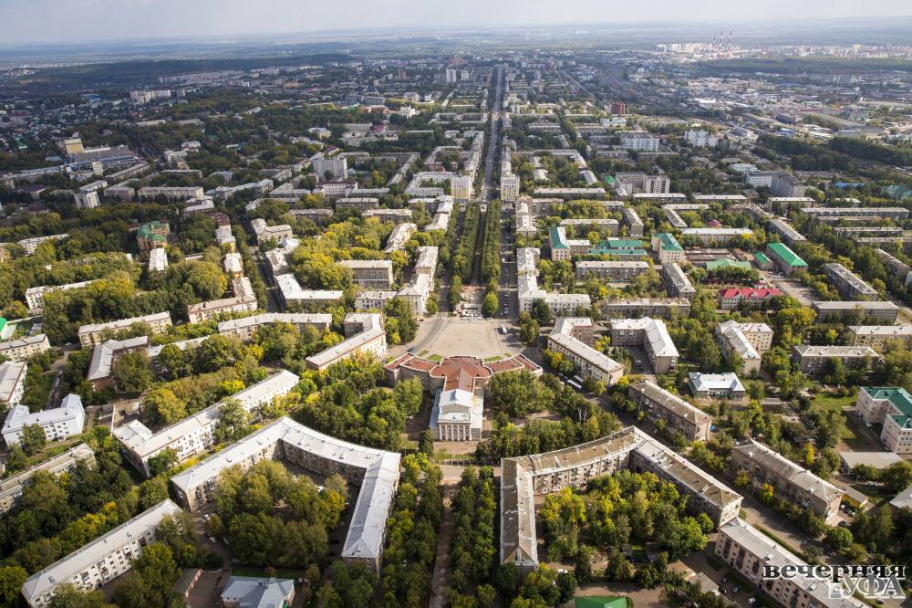
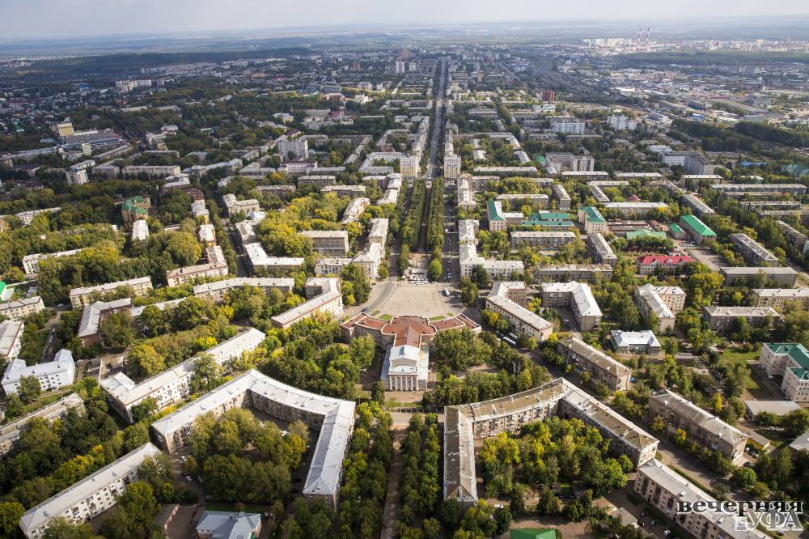

Почему Уфа ⸺ лучшая?
Уфа просторная
Это город-полуостров, который дышит полной грудью.
Здесь, стоя у памятника Салавату Юлаеву — самой большой конной статуе в
Европе — ты чувствуешь ветер степей и прохладу реки Белой.
В Уфе нет тупиков, здесь только горизонты.
Уфа — один из самых просторных городов-миллионников России. На каждого жителя здесь приходится почти 700 квадратных метров городской территории
Уфа зелёная
Вы когда-нибудь видели город, который выглядит как лес, в который случайно поставили дома? Это Уфа. Летом город утопает в зелени, а воздух здесь вкусный, как липовый цвет (кстати, башкирская липа — главный медонос региона). Здесь природа не за забором, она — часть нашей повседневной жизни.
 

Уфа лучшая
Уфа — бессменный лидер в топах среди российских городов:
Приезжайте в Уфу!
Made with <3 by @Tapeline